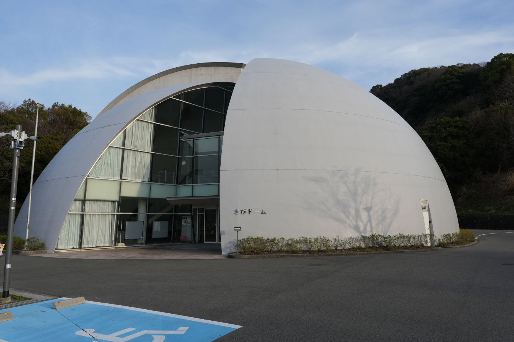
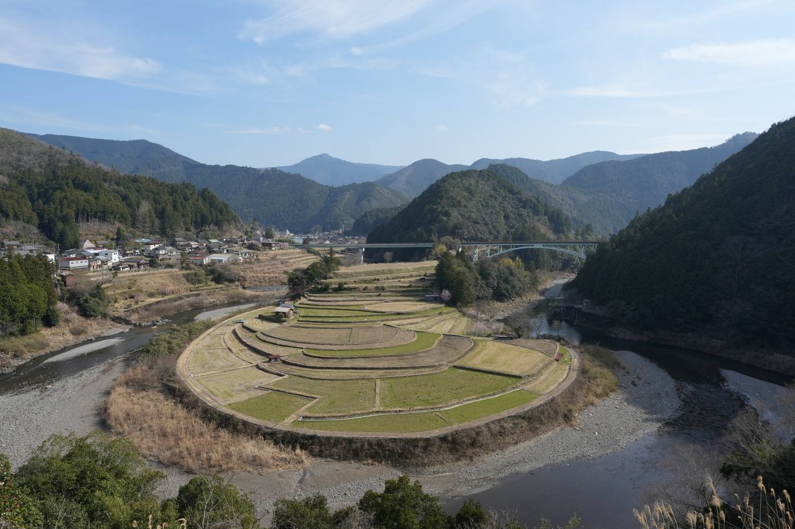
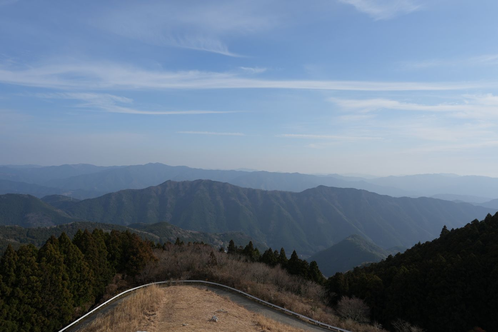
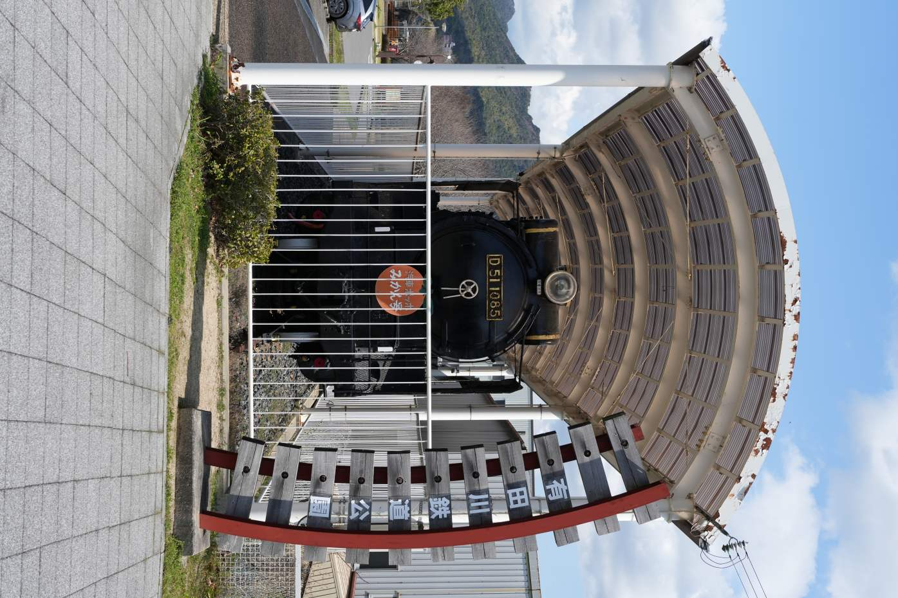

和歌山県有田川町
役場の横

あらぎ島

生石高原

有田川鉄道公園

有田川町はあらぎ島から高原、蔵王橋のように観光地が多く隠れた観光地。清水町エリアまで行くとかなり楽しめる。上湯川という山奥の街に行ったが、急に現れる住宅と週に一便のバスが面白い。2泊した。




有田川町はあらぎ島から高原、蔵王橋のように観光地が多く隠れた観光地。清水町エリアまで行くとかなり楽しめる。上湯川という山奥の街に行ったが、急に現れる住宅と週に一便のバスが面白い。2泊した。